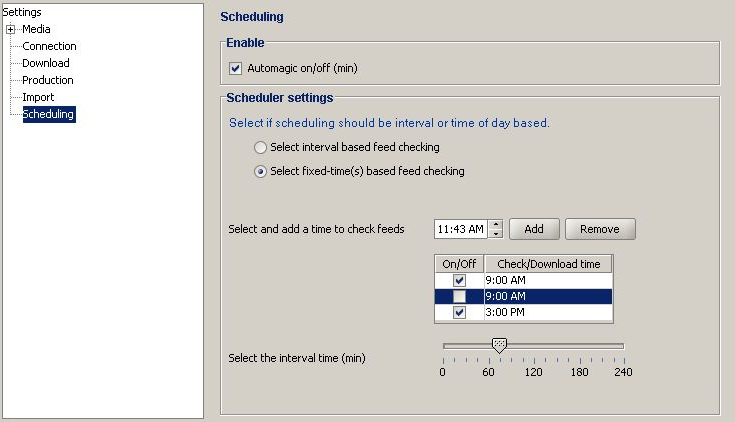

Allows you to enable/disable scheduling and specify one or more schedules

The Scheduling view contains these fields:
| Automagic on/off | if checked then jPodder will inspect feeds and downloads enclosures automatically |
| Select interval based ... | if checked then jPodder will start a schedule in a defined interval like every hour |
| Select fixed-time(s) based ... | if checked then jPodder will start a schedule at a given time like noon or two o'clock in the afternoon |
| Select and add a time ... | allows you to select a certain time of day and then add it to the schedule. Inside the list of schedules you can still uncheck a schedule to make it inactive |
| Select the interval time (min) | allows you to select an interval between two schedules in a fixed time schedule |